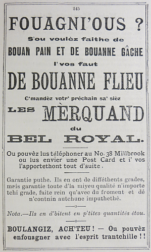
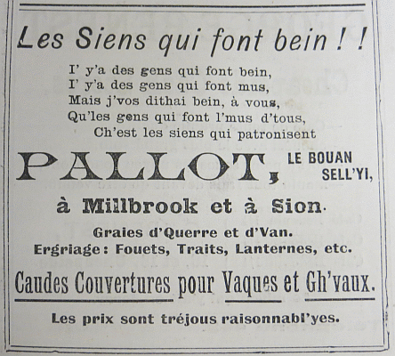
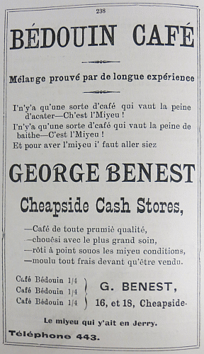

|

S'ou voulèz faithe de
I'vos faut
C'mandèz votr' préchain sa' sièz ou lus envier une Post Card et i' vos l'apportethont tout d'suite.
Garantie puthe. Ils en ont de difféthents grades, Nota. - Ils en d'bitent en p'tites quantités étou.
BOULANGIZ, ACH'TEU! - Ou pouvèz

I' y'a des gens qui font mus, Mais j'vos dithai bein, à vous, Qu'les gens qui font l'mus d'tous, Ch'est les siens qui patronisent
à Millbrook et à Sion
Graies d'Querre et d'Van. Caudes Couvertuthes pour Vaques et Gh'vaux. Les prix sont tréjous raisonnabl'yes.

Mêlange prouvé par de longue expérience I'n'y'a qu'une sorte d'cafe qui vaut la peine d'baithe - Ch'est l'Miyeu! Et pour aver l'miyeu i' faut aller siez
Cheapside Cash Stores, - chouêsi avec le plus grand soin, - rôti à point souos les miyeu conditions, - moulu tout frais devant qu'être vendu.
16, et 18, Cheapside Le miyeu qui y'ait en Jerry. |
Viyiz étout: